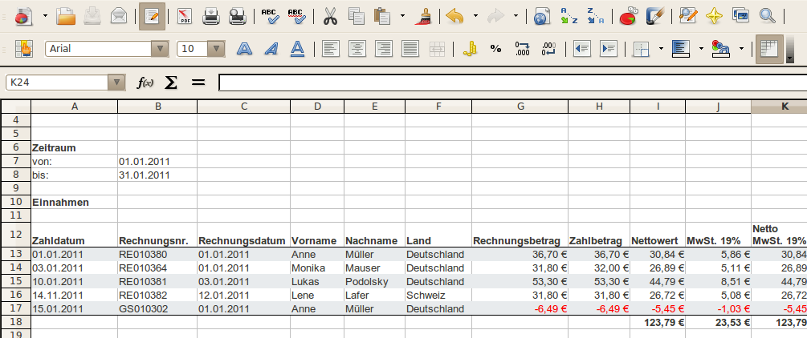

Exportiert eine Liste mit den Umsätzen (alle bezahlten Rechnungen) in einer OpenOffice.org / LibreOffice Tabelle.
In der Tabelle werden alle Rechnungen und Gutschriften in eine Zeile eingetragen. Für jeden Steuersatz ist eine eigenen Spalte vorgesehen.
Siehe auch Einstellungen Export Umsätze